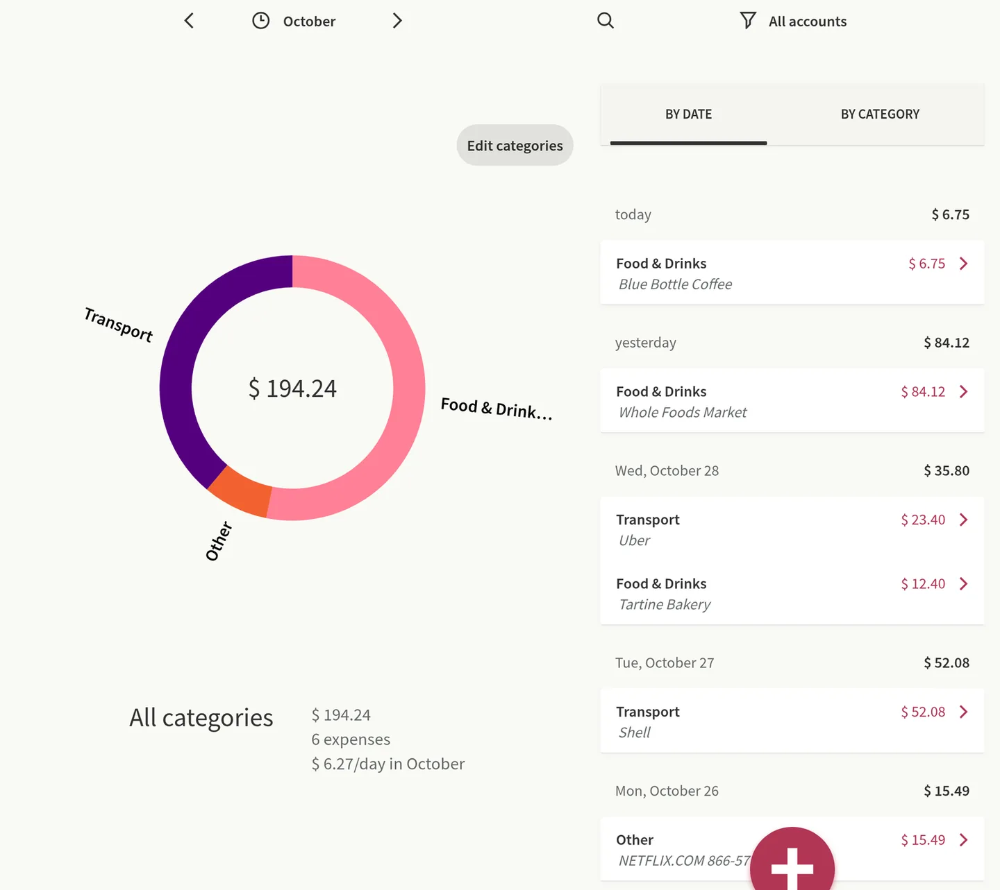

Send Apple Card transactions to Toshl Finance
WalletFeed sends your Apple Card, Apple Cash and Savings transactions from your iPhone to Toshl Finance. You make a personal token in Toshl, then paste it into WalletFeed.
Before you start
You must have these items:
- An iPhone with iOS 26 or a newer version. WalletFeed is available only in the US.
- WalletFeed, with access to the Wallet accounts that have the transactions for Toshl.
- WalletFeed Pro, because destinations are part of it. WalletFeed Pro is a subscription with a 1-week free trial, or a one-time Lifetime purchase.
- A Toshl Finance login with an e-mail address and a password. You can make personal tokens on the Toshl Free plan.
- A computer with a web browser, to add an account in Toshl in Step 1.
Step 1: Add an Apple Card account in Toshl
WalletFeed adds each transaction as an entry in one Toshl account. If the name of an account contains "Apple", WalletFeed selects that account for you. If you have a Toshl account for your card, this step is not necessary.
-
On your computer, open the Toshl web app.
-
If Toshl shows the Log In page, get access with your e-mail address and password.
-
Click All accounts.

-
In the Accounts panel, click ADD ACCOUNT.

On the Toshl Free plan, you can have only 2 accounts. If Toshl shows Upgrade to Toshl Pro or Medici, click X. Then go to Step 2.
-
Click General financial account.

Do not click Connected financial account. This account connects to a bank, and only the Medici plan has it.
-
In Title, type
Apple Card.You can keep 0.00 in New account balance and Account limit.

-
Click SAVE.
The Accounts panel shows the new Apple Card account.

Step 2: Open the Toshl Finance form in WalletFeed
-
On your iPhone, open WalletFeed.
-
In Destinations, tap +.

-
In Budgeting, tap Toshl Finance.

If you do not have WalletFeed Pro, WalletFeed shows WalletFeed Pro first. After you get WalletFeed Pro, WalletFeed shows the Toshl Finance form.
Step 3: Make a personal token in Toshl
-
In the Toshl Finance form, tap Open Apps.

Your web browser opens the Toshl Apps page.
If the page shows "Please login to proceed.", do these steps:
-
Tap login.

-
Type your Toshl e-mail address and password.
-
Tap Log in.
Toshl opens its web app. Toshl does not open the Apps page.
-
In WalletFeed, tap Open Apps again.
To make the token on the Apps page, do these steps:
-
In Description, type
WalletFeed.
-
In Password, type your Toshl password.
-
Tap Create.

Toshl shows the new token in a gray box below Tokens list. Toshl shows all of the token only one time.
-
Touch and hold the token in the gray box.

-
Make sure that the highlighted text includes all of the token.
The token has 72 characters, and Toshl can show it on more than one line. The text WalletFeed in the same row is the description, and it is not part of the token. Toshl has no button to copy the token.
-
Tap Copy.
Step 4: Add Toshl Finance in WalletFeed
-
Open WalletFeed again.
-
If WalletFeed does not show the Toshl Finance form, do Step 2 again.
-
Touch and hold Personal Token.
-
Tap Paste.
After WalletFeed makes sure that the token is correct, WalletFeed shows Account with your Toshl accounts. The token stays in the Keychain on your iPhone.
-
In Account, select the Toshl account for your card (for example, Apple Card).
-
Tap Add.
Then WalletFeed shows the Send Transactions to Toshl Finance? message. The message tells you that Toshl Finance receives the date, merchant, amount, currency and category of each transaction. The message also gives the Wallet accounts and the start date. If Initial History is All, the message shows "including earlier ones", not a date. If you tap Cancel, WalletFeed does not add the destination.
-
Tap Send.
Destinations shows the new destination (for example, Toshl · Apple Card). Then WalletFeed starts to send your transactions.

Data that Toshl Finance receives
WalletFeed has no account and no WalletFeed servers. Your transactions go from your iPhone directly to Toshl. After Toshl receives your transactions, the terms of Toshl are applicable to them.
Each transaction becomes one entry in the Toshl account that you selected. The transactions from different Wallet accounts go to this one Toshl account. Toshl does not receive the name of the Wallet account.
| In Wallet | In Toshl Finance |
|---|---|
| A purchase | An expense |
| A refund or other credit | An income |
| Amount | Amount. WalletFeed does not send a transaction with an amount of 0, because Toshl does not accept it. |
| Currency | Currency |
| Purchase date | Date, as the day in your time zone |
| Merchant, or the description if there is no merchant | Description, with a maximum length of 255 characters |
| Category | Category, from the category table |
| Transaction ID | The same ID, in a field that Toshl keeps but does not show |
For each new entry, WalletFeed compares your Toshl categories with the names in the second column, in sequence. WalletFeed uses the first name that agrees with a Toshl category. Capital letters do not change the result. If no name agrees, WalletFeed uses Other.
| WalletFeed category | Toshl category names, in sequence | Result for a new Toshl login with English categories |
|---|---|---|
| Groceries | Groceries, Food & Drinks, Food | Food & Drinks |
| Dining | Restaurants, Dining, Food & Drinks, Food | Food & Drinks |
| Transport | Transport, Transportation | Transport |
| Fuel | Fuel, Car, Transport | Transport |
| Entertainment | Entertainment, Leisure | Leisure |
| Travel | Travel, Holidays | Other |
| Shopping | Shopping, Clothing, Clothing & Footwear | Clothing & Footwear |
| Subscriptions | Subscriptions, Bills & Fees, Bills | Other |
| Utilities | Utilities, Home & Utilities, Bills & Fees, Bills, Home | Home & Utilities |
| Health | Health, Healthcare, Health & Personal Care, Health & Beauty | Health & Personal Care |
| Services | Services | Other |
| Cash & Transfers | Cash, Transfers | Other |
| Other | Other | Other |
| A refund or other credit | Refunds, Other (income categories) | Other |
WalletFeed sets the category only when it adds an entry. If you change the category, tags, location or reminders of an entry in Toshl, WalletFeed keeps your changes. If you change the amount, date or description in Toshl, WalletFeed replaces your change when it sends the transaction again.
New and changed transactions
While WalletFeed is open, Toshl receives changes in seconds. When WalletFeed is not open, iOS starts WalletFeed approximately 1 hour or less after a change in Wallet. If Background Sync is on in Settings › Sync, WalletFeed then sends the change.
Toshl has no pending status. Thus, Toshl shows a pending purchase as an expense. When the purchase becomes posted, WalletFeed changes the amount, date and description of the same entry.
If a pending purchase does not become posted (for example, after a decline), WalletFeed removes its entry from Toshl. WalletFeed does this only for entries from the last 90 days.
A refund is an income in Toshl, in the category Refunds or Other.
Send previous transactions
A new destination also receives previous transactions from the start date in Settings › Sync › Initial History. Initial History is All until you change it.
To send a different period, use Send History:
-
In Destinations, tap the Toshl Finance destination.
-
Tap Send History.

-
Tap 30 Days, 90 Days, 1 Year or All.
The destination screen shows Sending History while WalletFeed sends the history. To stop, tap Send History › Stop Sending.
WalletFeed sends the history in small parts, at a speed that Toshl accepts.
If you send a period again, WalletFeed finds the entries that it sent before. WalletFeed changes an entry only if a change is necessary. It does not add a second entry for a transaction.
Change or remove the destination
You change the Toshl Finance destination on its screen in Destinations.
Send only some transactions
-
In Destinations, tap the Toshl Finance destination.
-
Set Filter to on.
For more about the filter, refer to Choose what a destination receives.
Stop the destination for a time
- In Destinations, tap the Toshl Finance destination.
- Set Enabled to off.
Replace the token
-
Make a new personal token, as in Step 3.
-
In Destinations, tap the Toshl Finance destination.
-
Tap Replace Token.
-
Paste the new token in Personal Token.
-
Tap Replace.
If the new token does not have access to the same Toshl account, WalletFeed does not accept the token. The entries that WalletFeed sent before stay in Toshl. WalletFeed does not add these entries again.
Remove Toshl Finance from WalletFeed
-
In Destinations, tap the Toshl Finance destination.
-
Tap Delete.
-
Tap Delete again.
The transactions that WalletFeed sent stay in Toshl. The token also stays in Toshl until you delete it in Toshl.
Delete the token in Toshl
-
On your computer, open the Toshl Apps page.
-
In Tokens list, click Delete in the row of the WalletFeed token.

Toshl does not show a message before it deletes the token.
If there is a problem
If WalletFeed shows "Token rejected" or "Authentication failed"
Toshl does not accept the token, because you copied only part of it or you deleted it in Toshl.
- Make a new personal token, as in Step 3.
- If you added the destination before, do steps 2 thru 5 in Replace the token.
- If WalletFeed shows the Toshl Finance form, paste the token in Personal Token.
If the token in Toshl ends with "..."
Toshl shows all of the token only one time. After that, Toshl shows only the first part of the token, and WalletFeed cannot use this part.
- Make a new personal token, as in Step 3.
- In Tokens list, tap Delete in the row of the token that ends with "...".
- If you added the destination before, do steps 2 thru 5 in Replace the token.
- If WalletFeed shows the Toshl Finance form, paste the new token in Personal Token.
If WalletFeed shows "Create an account in Toshl first."
Toshl has no active account for your login.
- Add an account in Toshl, as in Step 1.
- In WalletFeed, remove the token from Personal Token.
- Paste the token again.
If WalletFeed shows "This token can't see" and the account name
The new token is from a different Toshl login, or the account is not in Toshl at this time. WalletFeed cannot send transactions to an account that is not in Toshl.
- Get access to Toshl with the login that has the account.
- Make a new personal token, as in Step 3.
- In WalletFeed, tap Replace Token.
- Paste the new token in Personal Token.
- Tap Replace.
- If WalletFeed shows the message again, do the steps in Remove Toshl Finance from WalletFeed.
- After you remove the destination, add Toshl Finance again from Step 1.
If Toshl shows "Upgrade to Toshl Pro or Medici"
On the Toshl Free plan, you can have only 2 accounts. The account Cash is one of them.
- Click X.
- In WalletFeed, in Account, select an account that you have in Toshl.
If you do not know your Toshl password
To make a token, you must type your Toshl password. If you use Apple, Google or Facebook to get access to Toshl, it is possible that you have no Toshl password.
- Open the Toshl Log In page.
- Tap Forgot password?.
- Set a Toshl password.
If many entries are in Other
A new Toshl login has no category names for some WalletFeed categories (for example, Travel, Subscriptions and Services).
-
On your computer, in the Toshl web app, click Expenses.
-
Click Edit categories.
-
Add an expense category with a name from the category table (for example,
Travel).The new category is for new entries only.
-
For an entry that WalletFeed sent before, change the category in Toshl.
If Toshl shows a negative balance
The new account starts at 0.00, and each purchase is an expense. Thus, the balance is less than zero after the first purchase. This balance is usual for a card account. It does not show a problem with the destination.
If Toshl shows no transactions
-
On your iPhone, open WalletFeed.
-
In Destinations, tap the Toshl Finance destination.
-
Read Last Sync.
-
If the screen shows a message below Last Sync, find that message on this page.
-
Tap Send Test.
Toshl receives a test expense of $4.20 with the description WalletFeed.
-
On your computer, in the Toshl web app, click Expenses.
-
To show a different month in Toshl, click the arrows adjacent to the month name.
-
After the test, remove the test expense in Toshl.
If Toshl shows an entry two times
If two iPhones send the transactions of one card to Toshl at the same time, each iPhone can add an entry.
- On one of the two iPhones, do the steps in Remove Toshl Finance from WalletFeed.
- In Toshl, remove one of the two entries.
If WalletFeed shows "Toshl is limiting requests. Try again later."
In a short time, Toshl received more requests than it accepts.
If WalletFeed shows this message in the Toshl Finance form, do these steps:
- Wait some minutes.
- Remove the token from Personal Token.
- Paste the token in Personal Token again.
If WalletFeed shows this message below Replace Token, do these steps:
- Wait some minutes.
- Do steps 3 thru 5 in Replace the token again.
If WalletFeed shows "Rejected (HTTP 429)" or "Too many requests."
Toshl received more requests than it accepts while WalletFeed sent transactions. WalletFeed stops, and it continues when it sends transactions to Toshl again. No step is necessary.
Related
Updated October 30, 2026